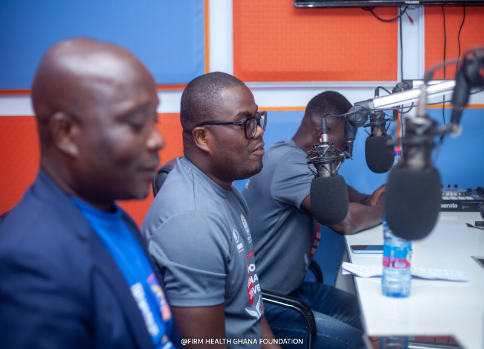
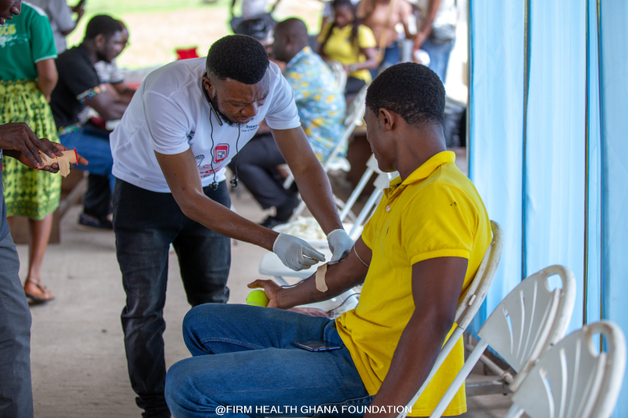
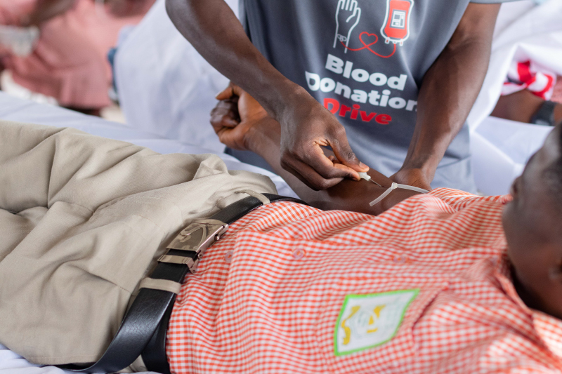
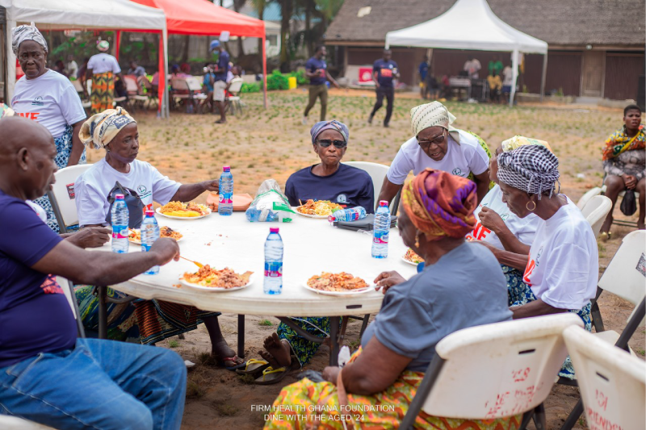

Over the years, the foundation has engaged in a diverse range of community interventions, addressing various aspects of health and well-being issues. This comprehensive approach has and continues to have a positive and lasting impact on the Below is a breakdown of each intervention thus far:
#1. Weekly Radio Program (Started in 2013)
Dubbed “Apɔwmudzen Mmr3 Nie” (Firm Health Hour), this program is
aired every Wednesday morning on Dynamite FM (88.9) between the hours of 8:30 am – 9:30 am. The program is
anchored by Dr Joseph Darko (Medical Superintendent, New Government Hospital, Bogoso) who doubles as head of
Medical Services of the foundation.
Objective: Raise awareness, disseminate information, and educate the
community on various topics such as health, education, social issues, and community development.
Implementation: Host weekly radio programs featuring expert guests,
community leaders, and informative content. Encourage audience participation through call-ins, surveys, or
social media interaction.
Impact -
Increased knowledge and awareness among community members, fostering a sense of unity and empowerment.

#2. Quarterly Blood Donation Drive (Started in 2023)
The primary aim of organizing the quarterly blood donation drives is to facilitate the collection of donated
blood from voluntary individuals to supply safe and sufficient blood and blood products to healthcare
facilities in the Tarkwa and Bogoso Municipalities. The target of the drive is to raise a thousand (1000)
pints of blood all year round. Meaning, the foundation aims to raise 250 pints of blood every quarter.
Objective: Contribute to the local healthcare system by ensuring a
stable blood supply for medical emergencies and treatments.
Implementation: Organize quarterly blood donation events, collaborating
with local hospitals, medical professionals, and volunteers. Conduct awareness campaigns before each
drive.
Impact -
Saving lives by providing a sustainable and accessible blood source, while also raising awareness about the
importance of blood donation.

#3. Community Medical Screening Program (Started in 2016)
The primary goal of organizing a free Community Medical Screening is to enhance community health and
well-being by providing accessible and preventive healthcare services. Over the past years, the foundation
has visited over 20 communities across the country and screened over 13,000. The tests carried out include;
BP tests, blood sugar level tests, urinalysis tests, eye tests, amongst others.
Objective: Improve community health by early detection and prevention of
diseases through regular medical screenings.
Implementation: Conduct regular medical screening camps in
collaboration with healthcare professionals. Cover a range of health indicators, including blood pressure,
blood sugar, cholesterol, and other relevant screenings.
Impact -
Early detection of health issues, increased health awareness, and promotion of a healthier lifestyle within
the community.

#4. 5KM Health Walk and Aerobics Session (Started in 2018)
The 5KM Health Walk and Aerobics Session is a fantastic initiative to promote physical activity, fitness,
and community well-being. This event is observed on the last Saturday of every month.
Objective: Promote physical activity, community engagement, and overall
well-being.
Implementation: Organize 5KM health walks with a designated route.
Follow it up with an aerobics session led by qualified instructors. Encourage participation from all age
groups.
Impact -
Contributes to the overall health, social cohesion, and well-being of the community.
.png)
#5. Feed the Aged and Medical Outreach
The "Feed the Aged and Medical Outreach" is a community initiative that combines two essential
components: providing nutritional support to elderly individuals and conducting medical screenings to assess
and address their health needs. This project aims to address the holistic well-being of elderly individuals
within the Beyin community by providing nutritional support and conducting medical screenings.

Objective:Address the needs of the elderly population by providing nutritional support and medical check-ups.
Implementation: Organize regular feeding programs for the elderly, along with comprehensive medical
screenings. Collaborate with healthcare providers and nutritionists to tailor the support to individual needs.
Impact -
Improved well-being for the elderly population, early detection of health issues, and social
engagement for this demographic.